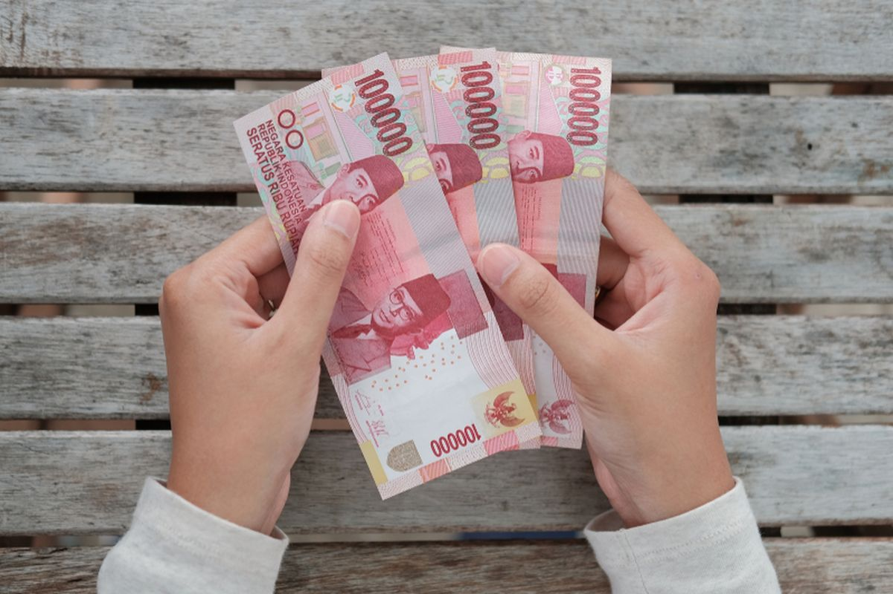
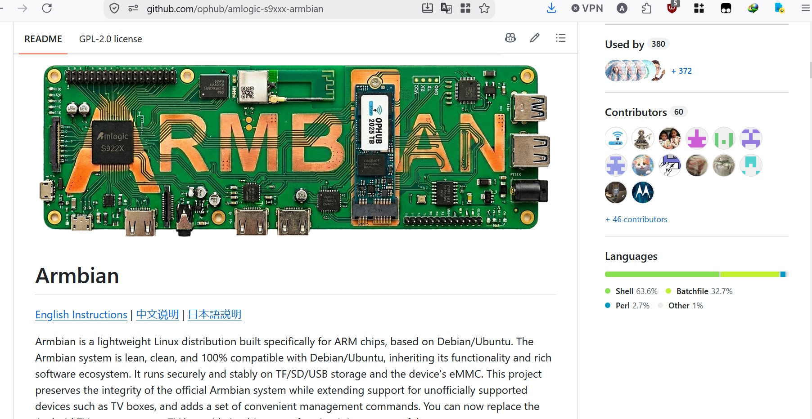
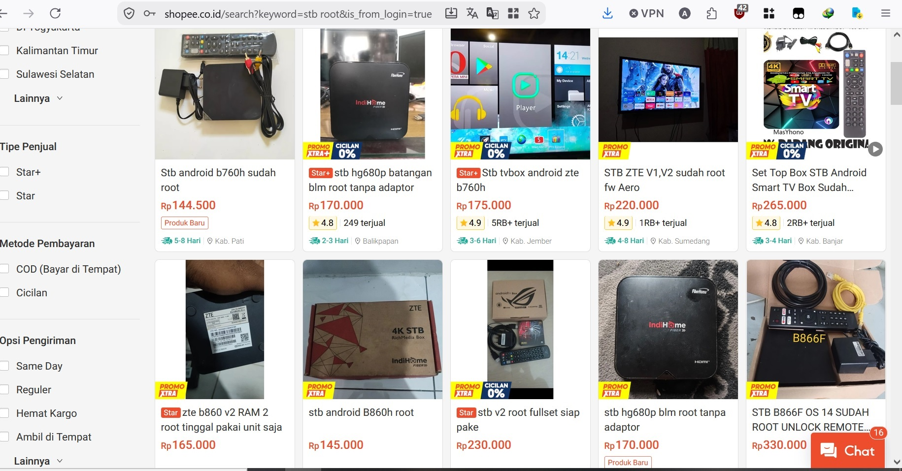
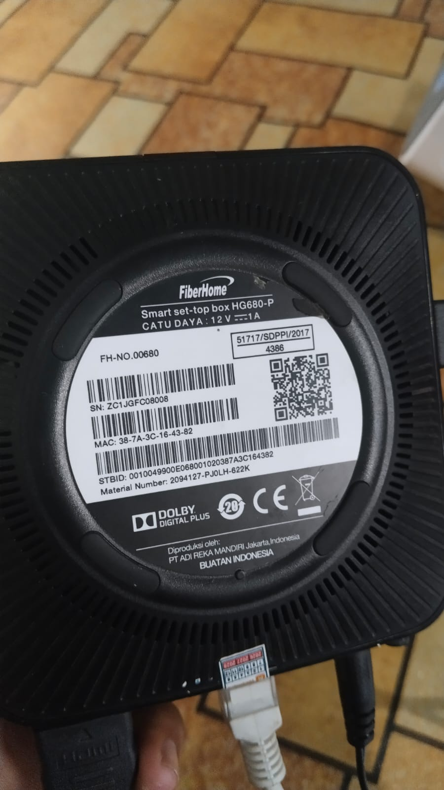
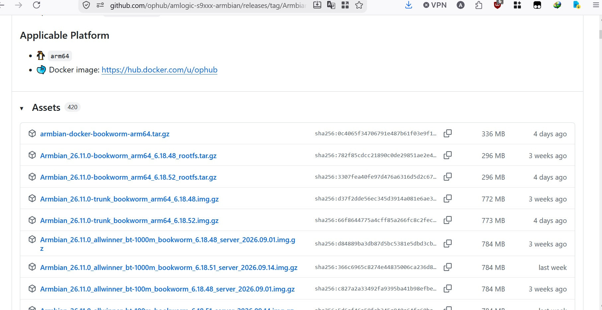
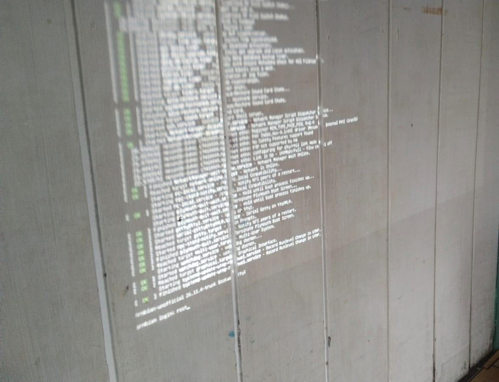
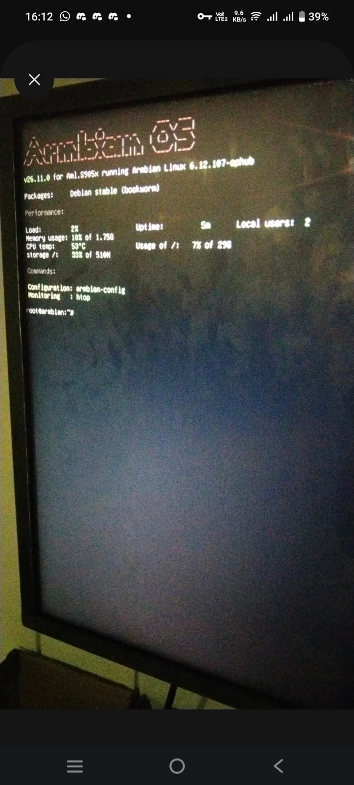
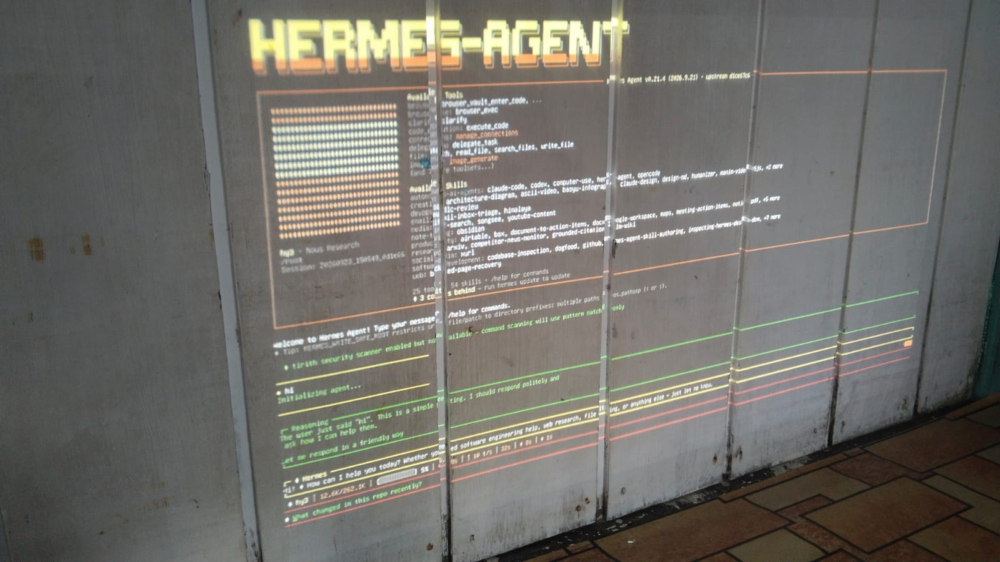

Mau punya home server sendiri?
Yup, bisa. Tapi terbatas biaya? Ok, bisa juga. Tutorial ini nunjukin gimana caranya bikin home server dari STB bekas yang di-root, jalanin Armbian (Linux buat chip ARM), terus install Hermes AI agent di atasnya. Total biaya? Jauh lebih murah dari VPS bulanan.
💰 Rincian Biaya

gambar orang ngitung uangWell, that's a lot — tapi ya memang segitu biayanya untuk spek 2GB RAM dan CPU ARM. Mau worth atau tidak, tergantung kebutuhan Anda. Yang jelas, ini jauh lebih murah dari sewa VPS bulanan kalau dihitung jangka panjang.
Disclaimer
Tutorial ini berdasarkan eksperimen pribadi. Segala risiko kesalahan, brick, kerugian, atau kerusakan yang terjadi saat mengikuti tutorial ini adalah tanggung jawab Anda sendiri. Penulis tidak bertanggung jawab atas apapun yang terjadi pada perangkat Anda.
Do it at your own risk.
0 Armbian — Apa Itu?

screenshot GitHub page Armbian communityShort story: Armbian itu Linux yang bisa jalan di chip ARM yang dipakai di STB. Namun... tidak semua STB bisa. Community support ada di GitHub page mereka yang melist device apa saja yang compatible.
→ Cek daftar STB support di GitHub Armbian1 STB yang Support
Saya tidak tau segmen pasar dan stok STB apa yang mayoritas tersedia di Indonesia, namun berdasarkan cek di Shopee dan master root STB lokal setempat yang support dual boot (ingat, ini dual boot):

screenshot Shopee — STB yang dijualHG680-P
Yang saya gunakan dan test berhasil. Chip: Amlogic S905X.
B860H
Menurut tukang root setempat, support dual boot.
HG680V (V1, V2, V5)
OS Android 9 menurut tukang root setempat.

foto belakang STB (info chip/serial)2 Download Image & Flash ke SD Card
Ok, STB sudah aman (kasus saya: HG680-P pakai chip S905X). Next, soal ISO/image untuk flash-nya — jujur saya pakai Claude untuk bantu carikan room/image dan hasilnya payah... Saya harus cari dan sesuaikan sendiri.
Dalam kasus saya (HG680-P / S905X), saya pakai Bookworm latest release:
Armbian_26.11.0_amlogic_s905x-b860h_bookworm_6.12.107_server_2026.09.01.img

screenshot list release ArmbianJadi kembali lagi — manual job mencocokkan model STB dengan image-nya. Jangan asal pilih, pastikan chip-nya match.
Flash pakai Rufus ke SD Card
Download image Armbian yang sesuai chip STB Anda.
Download & buka Rufus di PC/laptop.
Masukkan SD Card ke card reader USB, colok ke PC.
Di Rufus, pilih SD Card sebagai target, pilih file image Armbian.
Klik Start, tunggu sampai selesai.
JANGAN dulu pasang SD Card ke slot STB. Nanti setelah step terminal.
3 Boot ke Armbian
Persiapan di STB
Cari aplikasi terminal di STB Anda. Kalau tidak ada, coba Termux (cari cara install-nya kalau tidak ada — biasanya harusnya ada).
Di terminal, ketik:
su
Grant super user ke terminal — izinkan, ya,bolehkan bila pop-up muncul.
Lalu ketik (tapi jangan enter dulu):
reboot update

gambar loading booting berjalanSTB akan restart. Jika berhasil, akan masuk ke boot screen seperti di gambar atas. 🎉
First-Time Setup
Buat password root — catat! Pilih yang mudah diketik tapi kuat dan aman.
Buat nama user — bisa apa saja. Saya pakai root.
Masukkan password user — dua kali konfirmasi.
Nama device — beri nama STB Anda. Saya kasih root.
Locale/bahasa — pilih sesuai angka di list. Untuk default English, pilih Skip generating locale (set ke English). Double-check ya, kurang lebih angka 330 atau skip.

gambar Armbian sukses terinstallSudah muncul terminal prompt seperti di atas? Berarti sukses! Tinggal config WiFi/SSH dan install Hermes.
4 Koneksi Internet & SSH
Internet
Install & Koneksi SSH
Kalau mau enak kerjanya, install SSH dulu. Dengan SSH, Anda bisa kontrol STB dari PC/laptop/HP tanpa perlu colok keyboard-mouse ke STB terus.
Koneksi SSH dari device lain:
🪟 Windows
ssh user@ip-stb🐧 Linux
ssh user@ip-stb📱 Android
ssh user@ip-stb5 Install Hermes
Ok, sisanya — install Hermes sebagaimana biasanya, normalnya:
- Config yang diperlukan
- Setup gateway
- Selesai ✓

screenshot Hermes chat yang sudah jalan di STBSelamat! Jika Anda berhasil sampai di akhir tutorial ini dan STB Anda tidak brick :-) Semoga bermanfaat!
Support saya jika tutorial ini bermanfaat — biar ada research fund untuk membeli alat dan resource untuk penelitian.
☕ Trakter di Trakteer.id